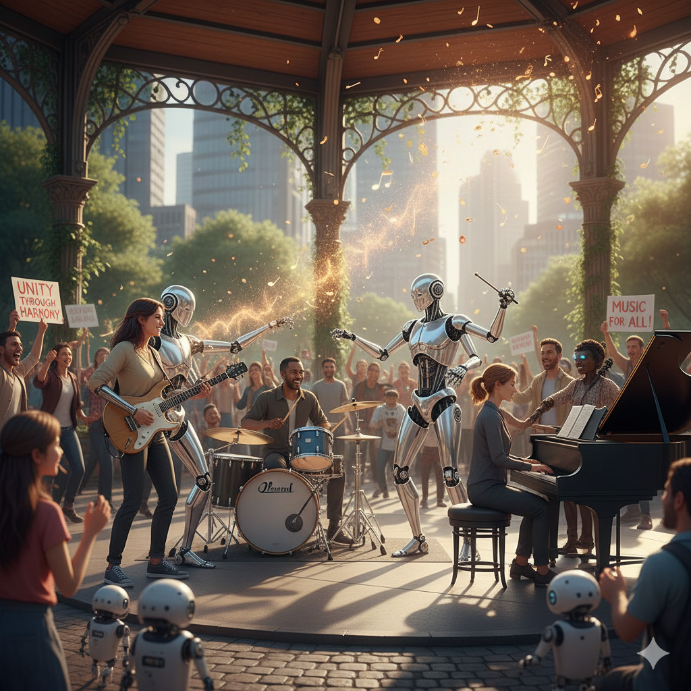

AI As An Ally
 AI has almost the same effect on eveything it touches, for instance in education it can be a used as a tool or we can be the tool being used. This same effect happens in music as well. Artist can realize its use and use it strategically to create out of this world melodies.
Most Music nowadays are just beats, not entirly instruments but on a board being pressed to make sounds, AI will help enhance this specific way of creating music. It will/could be used as a "Creative Partner" to help the Artist mind in thinking in ways they thought they never could.